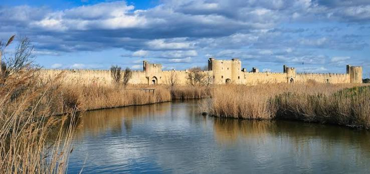

Aigues-
MortesCité fortifiée médiévale


⟹ Sites Emblématiques ⟸
Un pays d’eaux dormantes. Aigues-Mortes est née dans un milieu amphibie façonné par le Rhône. Pendant des millénaires, les alluvions du fleuve et les courants marins ont construit en Petite Camargue un paysage de cordons sableux, de lagunes, de marais et de canaux naturels. Le nom de la ville vient de l’occitan aigas mortas, du latin aquae mortuae : les « eaux mortes », c’est-à-dire les eaux stagnantes des étangs qui l’entourent. Ce décor, à la fois hostile et riche en ressources, a déterminé toute son histoire.
Le sel, première richesse du littoral. Bien avant la fondation royale, les rivages de Camargue sont exploités pour le sel. La tradition attribue même à un Romain nommé Peccius l’aménagement des premiers bassins, souvenir que conserverait le nom des salins de Peccais. Au haut Moyen Âge, les terres de la zone appartiennent en grande partie à l’abbaye bénédictine de Psalmody, qui tire des revenus importants de la pêche et de la production de sel. Une tour de guet, la tour Matafère, dont la tradition fait remonter l’origine à l’époque carolingienne, surveillait déjà ces rivages.
Un port pour le royaume de France. Au début du XIIIe siècle, le domaine royal ne dispose d’aucun accès direct à la Méditerranée : Marseille dépend du comté de Provence, Montpellier du roi d’Aragon, et les autres ports du Languedoc de seigneurs puissants. Après l’intégration du Languedoc à la couronne en 1229, Louis IX cherche un débouché sûr, à la fois commercial et militaire. En 1240, il obtient par échange avec les moines de Psalmody le site d’Aigues-Mortes et y décide la création d’une ville nouvelle.
Attirer les habitants. Fonder une ville au milieu des marais suppose de convaincre des colons de s’y installer. En 1246, Saint Louis accorde à Aigues-Mortes une charte de franchises très généreuse : exemptions d’impôts, privilèges commerciaux et garanties juridiques. Marchands, artisans et marins affluent. La ville est tracée selon un plan régulier en damier, typique des villes neuves médiévales, avec des rues rectilignes se croisant à angle droit autour d’une place centrale.

La Tour de Constance. Premier grand chantier royal, la Tour de Constance est élevée à partir de 1242, probablement à l’emplacement de l’ancienne tour Matafère. Ce donjon circulaire d’environ 22 mètres de diamètre, aux murs épais de près de 6 mètres, abrite deux grandes salles voûtées superposées. Il est surmonté d’une tourelle de guet dont la lanterne servait de phare pour guider les navires à travers les étangs. L’ensemble atteint près de 40 mètres et demeure le symbole de la puissance capétienne sur le littoral.
Le départ des croisades. Le 25 août 1248, Louis IX embarque à Aigues-Mortes pour la septième croisade, à la tête d’une flotte en grande partie affrétée auprès de Gênes et de Marseille. Les navires rejoignent la mer par des chenaux creusés à travers les étangs. En 1270, le roi repart du même port pour la huitième croisade, dirigée vers Tunis, où il meurt de maladie quelques semaines plus tard. Aigues-Mortes reste ainsi à jamais associée à la figure de Saint Louis.
L’enceinte des successeurs. Les remparts ne sont pas l’œuvre de Saint Louis lui-même. Son fils Philippe III le Hardi en lance la construction à partir de 1272, en confiant le financement et l’organisation du chantier au marchand génois Guillaume Boccanegra. Les travaux s’achèvent vers 1300 sous Philippe IV le Bel. L’enceinte forme un quadrilatère d’environ 1 640 mètres de courtines, flanquées de tours et percées de portes, dont plusieurs donnaient directement sur les quais et le port.
Les Templiers prisonniers. Lors de l’arrestation des Templiers ordonnée par Philippe le Bel en 1307, Aigues-Mortes est l’un des lieux de détention du Midi. Plusieurs dizaines de frères de l’ordre, arrêtés dans la région, sont enfermés dans la Tour de Constance avant d’être jugés. C’est le premier usage carcéral connu d’un édifice qui deviendra, au fil des siècles, l’une des prisons les plus célèbres de France.
Grandeur et déclin d’un port. Aux XIIIe et XIVe siècles, Aigues-Mortes est l’un des grands ports du royaume en Méditerranée, par lequel transitent épices, draps, sel et denrées venues d’Orient. Mais les chenaux s’ensablent sans cesse et exigent des travaux coûteux. Le rattachement de Marseille à la couronne en 1481, puis la création du port de Sète en 1666, achèvent de marginaliser la cité, désormais éloignée de la mer par l’avancée du littoral.
Le massacre des Bourguignons. Pendant la guerre civile entre Armagnacs et Bourguignons, la ville change plusieurs fois de mains. En 1418, selon une tradition tenace, les partisans armagnacs reprennent la place et massacrent la garnison bourguignonne ; faute de pouvoir enterrer rapidement les corps, on les aurait entassés dans une tour et recouverts de sel. L’anecdote a donné son nom à la tour des Bourguignons, l’une des tours de l’enceinte.
L’entrevue de 1538. En juillet 1538, Aigues-Mortes accueille un événement diplomatique majeur : la rencontre entre le roi François Ier et l’empereur Charles Quint, peu après la trêve de Nice. Les deux souverains, rivaux depuis des années, s’y retrouvent pour sceller un rapprochement qui sera de courte durée. Cet épisode montre que la cité conserve alors un prestige symbolique, même si son rôle portuaire décline.
Place protestante puis prison des huguenots. Pendant les guerres de Religion, Aigues-Mortes devient une place de sûreté accordée aux protestants. Après la révocation de l’édit de Nantes en 1685, la situation s’inverse : la Tour de Constance sert de prison aux protestants refusant d’abjurer. Des camisards y sont enfermés, et le prophète Abraham Mazel parvient à s’en évader en 1705. Au XVIIIe siècle, la tour est surtout la prison des femmes huguenotes.
Marie Durand et le mot « Résister ». La plus célèbre de ces prisonnières est Marie Durand, arrêtée en 1730 alors qu’elle n’était qu’une adolescente, parce qu’elle était la sœur d’un pasteur. Elle reste enfermée trente-huit ans et n’est libérée qu’en 1768, sans jamais avoir renié sa foi. La tradition lui attribue l’inscription « REGISTER » (résister en occitan) gravée sur la margelle du puits de la salle haute, devenue un symbole de la liberté de conscience.
Le sel et le drame de 1893. Au XIXe siècle, l’exploitation du sel s’industrialise avec la Compagnie des Salins du Midi, fondée en 1856. Les salins emploient de nombreux saisonniers, notamment italiens. En août 1893, des affrontements entre ouvriers français et italiens dégénèrent en véritable chasse à l’homme : au moins huit Italiens sont tués selon le bilan officiel, et de nombreux autres blessés. Ce massacre provoque une grave crise diplomatique entre la France et l’Italie.
La redécouverte patrimoniale. Dès le XIXe siècle, les historiens et les architectes du service des Monuments historiques reconnaissent l’importance exceptionnelle de la cité : la Tour de Constance et les remparts comptent parmi les premiers monuments protégés en France. Restaurés, ils sont aujourd’hui gérés par le Centre des monuments nationaux, qui en assure l’ouverture au public.
Une cité vivante aux portes de la Camargue. Aigues-Mortes est aujourd’hui l’un des ensembles fortifiés médiévaux les mieux conservés d’Europe. Ses remparts presque intacts, son plan régulier, ses salins aux teintes roses et sa position entre terre et eau en font un lieu unique. Les fêtes de la Saint-Louis, célébrées chaque année à la fin de l’été, rappellent encore l’acte fondateur du roi, près de huit siècles après la naissance de la ville.